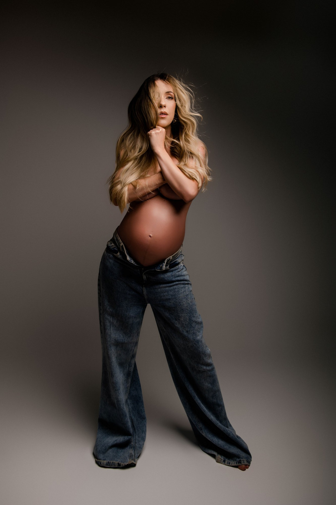

Mais do que um
ensaio gestante...
Uma experiência completa pensada para que você se sinta linda, segura e bem conduzida em cada detalhe.
Quero Essa ExperiênciaUma experiência completa pensada para que você se sinta linda, segura e bem conduzida em cada detalhe.
Quero Essa ExperiênciaO Maravilhosamente Grávida é o processo que a Thammires criou para que você se sinta acolhida, orientada e tranquila do primeiro contato até a última foto.
Porque aqui o objetivo não é só fotografar. É fazer você se sentir confiante, leve e linda durante todo o processo.

“Será que eu vou gostar das minhas fotos?”
E o que mais se ouve depois do ensaio é:
“Eu não imaginava que ia me sentir assim.”
Isso acontece porque nenhuma imagem é feita por acaso. Cada uma é pensada para transmitir:
E isso só acontece quando existe direção, cuidado e intenção em cada detalhe.
Quero Essa Experiência
Esse é um dos pontos que mais trazem alívio para as gestantes.
Aqui, você não precisa decidir nada sozinha. Não precisa se preocupar com:
o que vestir, como se maquiar ou como posar.


Tudo já está preparado para você!
A produção de beleza é feita por profissional especializada, que cuida de cada detalhe para valorizar sua beleza de forma natural e elegante.
A direção artística, a condução do ensaio e os figurinos ficam por conta da fotógrafa Thammires Turunem, que acompanha você em cada etapa.
Você chega… e é conduzida com tranquilidade do começo ao fim.
Você não precisa saber se posicionar. Cada movimento é guiado com calma e sensibilidade, respeitando o seu corpo, sem poses forçadas ou desconfortáveis.
Peças selecionadas que conversam com a proposta do ensaio, para você não perder tempo com dúvidas e ter um resultado harmônico e sofisticado.
Maquiagem e cabelo pensados para a fotografia, feitos por profissional especializada, com um acabamento à altura da experiência.
Do primeiro contato até a entrega final, você é acompanhada em cada etapa, com orientação e apoio para se sentir segura em todas as escolhas.
No meio do ensaio existe um instante que não se fotografa, se sente. O tempo desacelera e você percebe que está vivendo algo maior do que fotos.
Um estúdio pensado para o seu conforto, com cenário, luz e temperatura ajustados antes de você chegar, para que a única preocupação seja aproveitar.


Elas não estão buscando apenas fotos.
Estão buscando segurança durante todo o processo e a certeza de que o resultado vai ser exatamente como sonharam.
Mamães que já registraram a gestação com a Thammires Turunem.
Muitas gestantes dizem:
“Eu não me via assim durante a gravidez.”
Porque não é só sobre imagem.
É sobre se enxergar com mais leveza, mais carinho e mais segurança.
Você não quer apenas registrar. Quer viver uma experiência.
Quer explorar diferentes versões de si mesma e criar imagens com a sua identidade. Há mais tempo para criar, conversar, experimentar e construir algo único.
O PREMIUM não é apenas um ensaio. É uma experiência criada para você.
Você não precisa se preocupar com produção, estilo ou decisões. Cada etapa é planejada para que você se sinta cuidada, valorizada e presente. Tudo acontece com mais tempo, mais personalização e atenção especial aos detalhes, com imagens de um nível artístico ainda mais sofisticado.
É a escolha de mulheres que sabem que alguns momentos são únicos e merecem ser vividos da melhor forma.
Você quer guardar esse momento antes que ele passe.
Deseja imagens bonitas e bem conduzidas, sem uma experiência longa ou muitas produções. É um ensaio objetivo e acolhedor: você chega, vive seu momento e leva uma lembrança linda da sua gestação.
Para garantir qualidade e cuidado em cada ensaio, a agenda é bem limitada. Cada gestante recebe tempo, atenção exclusiva e condução completa durante toda a experiência. Por isso as vagas são poucas e devem ser reservadas com a maior antecedência possível.
O período mais indicado é entre 28 e 32 semanas. Nessa fase a barriga já está bem evidente e você ainda se sente confortável para viver a experiência com tranquilidade. Por isso, o ideal é agendar com antecedência para garantir a data nesse intervalo.

As datas costumam ser preenchidas rapidamente, principalmente para o período ideal da gestação.
Se esse tipo de ensaio faz sentido para você, e você valoriza ser bem conduzida, com calma e atenção em cada detalhe:
Verificar Datas DisponíveisSe ficou alguma dúvida, fale com a gente pelo WhatsApp! Vai ser um prazer responder e explicar tudo com calma.
Falar com a Thammires